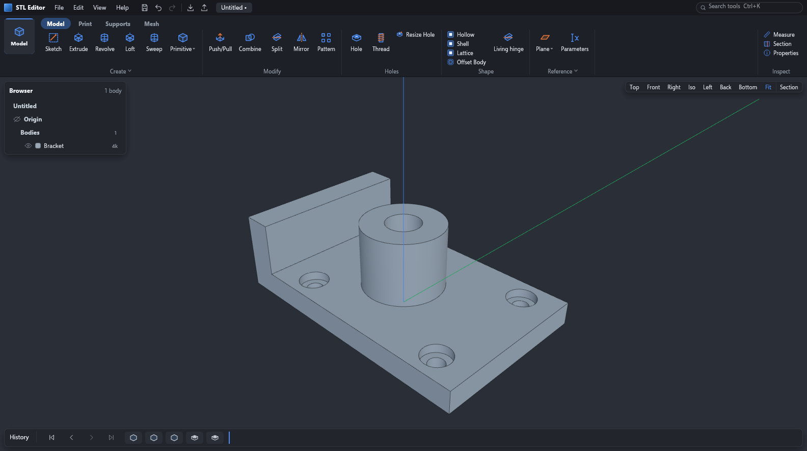
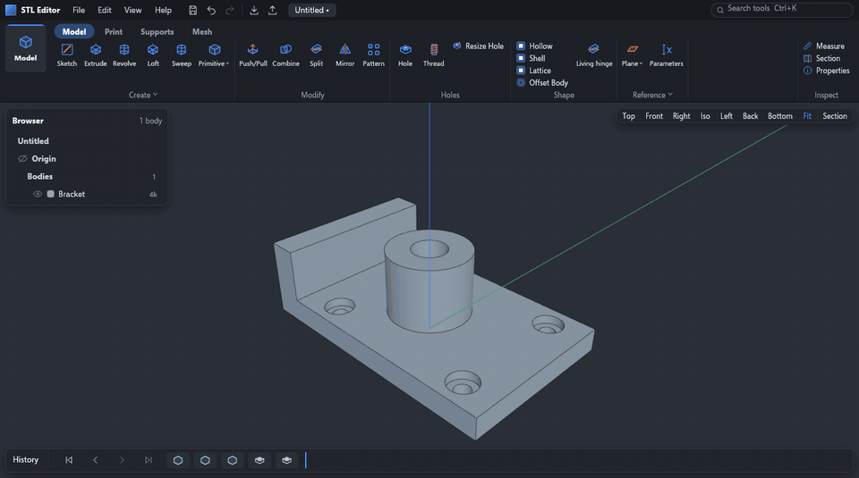
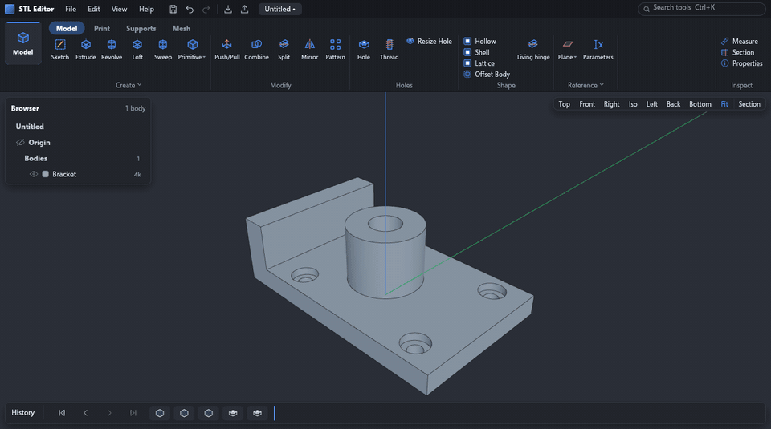
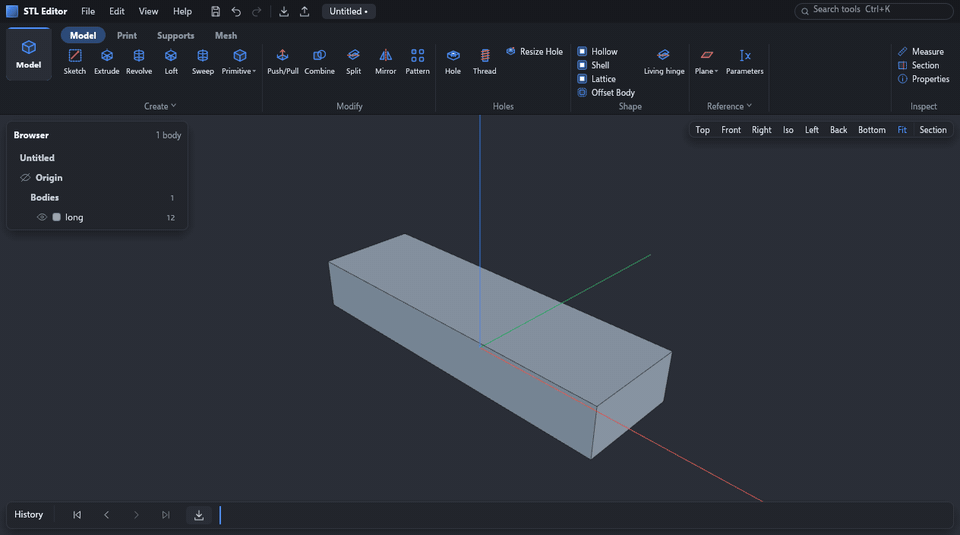
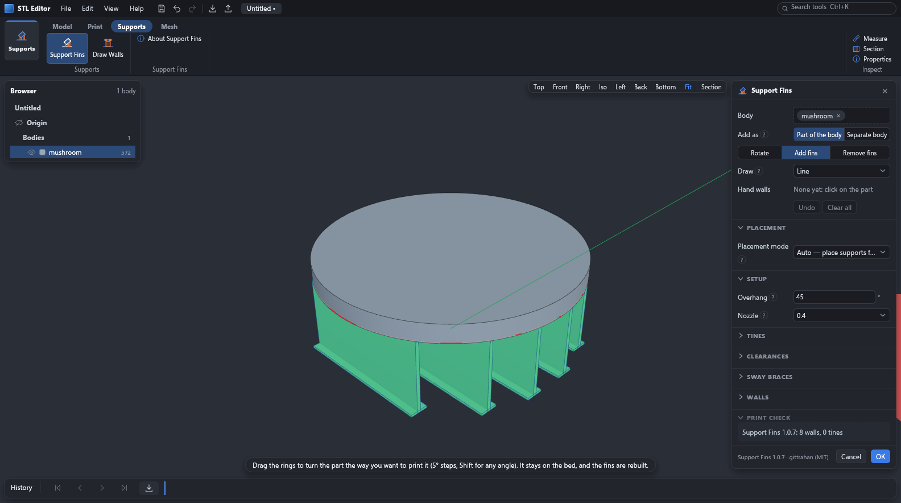
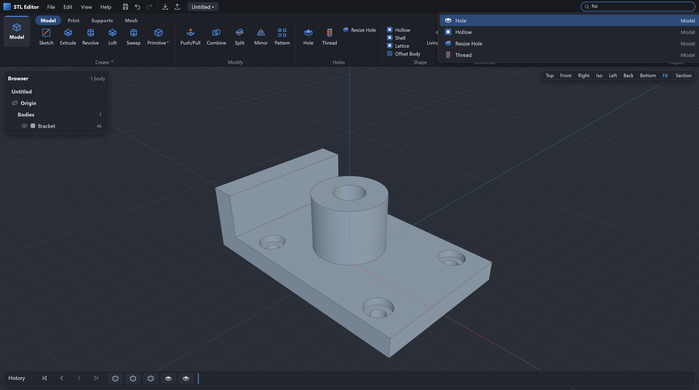

Sketch on a flat face, cut a pocket, drill a hole for a heat-set insert, add a thread that prints, or split a part to fit your bed. Right on the mesh you downloaded, then straight to your slicer.

2.0 does everything 1.x does, with the same tabs, panels and shortcuts, so there is nothing to relearn. What changed is underneath.
The Windows download is a single file. No zip to unpack, no Python, nothing to install. It starts in a moment, and the 3D view draws on your graphics card, so big meshes stay smooth when you turn them.
Windows, Mac, Linux and the web edition are built from the same code, so they look and work the same. The web edition is the full app, running in your browser.
Projects saved in 1.x open and rebuild in 2.0. Settings live in their own folder, so you can keep 1.x installed while you switch.
A model from Printables, Thingiverse or MakerWorld becomes a solid you can edit. Every step goes on a timeline you can change later.
Double-click any flat face to sketch on it. Draw, give it real sizes, and cut it in or pull it out. Holes come with presets for the hardware you actually use, and threads are made to screw together after printing.


Pick your printer or type your bed size, and a part that's too big is cut into pieces that fit. Pins, pin holes, filament dowels or magnet pockets go on every seam, so the pieces line up when you glue them.

Support Fins is built in. It adds thin breakaway walls and a bed pad to the part itself, so they come off cleanly instead of fusing to the overhang. A check marks every overhang the fins don't reach in red, before you slice.

The tools sit on four tabs: Model, Print, Supports and Mesh, with Measure, Section and Properties on every one. Press Ctrl K and type a few letters to jump to any tool.
1 3/8. Everything is still stored in millimetres.
No sign-up, no subscription and no tracking. It's free and open source under the GPL-3.0, for any project, including prints you sell.
The desktop app and the web edition do all their work on your own machine. Nothing is uploaded, and both keep working offline.
Every sketch, cut, hole and split is a step on the timeline. Double-click an earlier step, change a size, and everything after it rebuilds.
Each tool lives on one tab. The tool search finds all of them.
Sketch · Extrude · Revolve · Loft · Sweep · Primitive (box, cylinder, sphere, cone, torus)
Push/Pull · Combine · Split · Mirror · Pattern
Hole · Thread · Resize Hole
Hollow · Shell · Lattice · Offset Body · Living hinge
Plane (offset, at an angle, 3-point, midplane) · Parameters
Lay Flat · Move · Rotate · Scale
Fit to Bed · Plate Layout · Fit Test
Thin-wall Check
Export (STL, 3MF, OBJ) · Send to Slicerdesktop
Support Fins · Draw Walls
About Support Fins
Repair · Simplify · Remesh · Separate · Remove Bodies
Brushes (smooth, flatten, inflate, deflate)
To STEPdesktop
Measure · Section · Properties
Line · Arc · Rectangle · Center Rectangle · Circle · Polygon · Slot · Text · Project · Use Edge · Import SVG / DXF
Select · Trim · Offset · Mirror · Round corner · Delete · Construction · Look At
Smart Dimension · Coincident · Horizontal / Vertical · Parallel · Perpendicular · Equal · Tangent · Concentric · Midpoint · Fix · Symmetric
One file to download with nothing to install, or the full app in a browser tab.
One file. Put it anywhere, on the Desktop, in Documents or on a USB stick, and run it. No installer and no admin rights.
The app isn't code-signed yet, so Windows may say "Windows protected your PC" the first time. Click More info, then Run anyway.
All releases on GitHub →The same app, built for the browser. Works in a recent Chrome, Edge, Firefox or Safari on Windows, macOS, Linux, ChromeOS and tablets, and keeps working offline once it has loaded.
| Windows | 10 or 11, 64-bit, a graphics card with DirectX 12 or Vulkan |
| Opens | STL, 3MF, OBJ, PLY, OFF, GLB/glTF, .stlx projects |
| Saves | STL, 3MF, OBJ, and STEP on Windows through SolidCraft |
| Slicers | Bambu Studio, OrcaSlicer, PrusaSlicer |
Built from the same code as the Windows app, but newer and less tested. If something goes wrong, the web edition is the safe choice.
chmod +x, or tick "Allow executing" in its properties) and run it.Yes. STL Editor is free and open source under the GNU General Public License v3.0. You can use it for any project, including prints you sell. If it saves you a reprint, you can buy me a coffee on Ko-fi, but nothing depends on it.
No. The desktop app never sends your files anywhere; its only network request is an optional check for a new version. The web edition runs entirely in your browser, so your files never leave your computer.
CAD programs like Fusion 360 or SolidWorks treat an STL as a dead surface you can't really edit. Slicers like Bambu Studio or PrusaSlicer prepare a print, but can't sketch, drill a hole for an insert or make a thread. STL Editor sits in between: it lets you sketch, cut and drill on the mesh itself, then sends it to your slicer.
In 2.0 they are the same app, with the same tools and the same .stlx project files. The desktop app is faster on very large meshes and can start your slicer and convert to STEP. The web edition needs no download and runs on any system with a recent browser, including ChromeOS and tablets.
Very little you will notice. The tabs, panels and shortcuts are the same, and your 1.x projects open in 2.0. 2.0 keeps its settings in its own folder, so you can run both while you switch. The one 1.x tool 2.0 doesn't offer is Snap-fit; projects that already use it still open and rebuild.